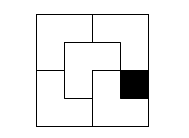

Class 12: Divide and Conquer II
02-19-2020
“[Insert quote here]”
When we are doing binary search we are basically finding a function \(f: \mathbb{D} \to \{0, 1\}\), we are finding a function that maps the elements of a set \(\mathbb{D}\) to \(0\) or \(1\) (can be seen as false or true) and \(f\) is always a monotone function (non-increasing or non-decreasing).
For example, if we have the array \(A = \{b_0, b_1, b_2, \dots, b_{n - 1}\}\) and we are going to do queries over the array to determine whether a number is in \(A\) or not we can do these definitions:
\[\mathbb{D} = \{0, 1, 2, \dots, n\}\] \[f_p(x) = [p \leq A[x]]\]
That is, \(f = f_p\) will be a function that will indicate if \(p \leq A[x]\) for \(x \in [0, n)\) and as \(f\) must be monotone we need to sort \(A\) (why?). Now, with these definitions and asumming \(A\) is sorted, \(f\) may looks something like this.

Then, if \(p\) is in the array \(A\), it must hold that \(A[z] = p\), so now our problem is to find the first element where \(f(x) = 1\), that is \(z\) and we can compute it using divide and conquer.
#include <bits/stdc++.h>
using namespace std;
// Returns true if p is in A in O(n)
bool brute_force (const vector <int>& A, int p) {
for (int elem: A) {
if (elem == p) return true;
}
return false;
}
// Returns true if p is in A in O(log n)
bool divide_and_conquer (const vector <int>& A, int p) {
int l = 0, r = A.size() - 1;
while (l != r) {
int m = (l + r) >> 1; // = (l + r) / 2
bool f_p = (p <= A[m]);
if (f_p) {
r = m;
} else {
l = m + 1;
}
}
int z = l;
return (A[z] == p);
}
int main () {
// To get 'good' random numbers
mt19937 rng(chrono::steady_clock::now().time_since_epoch().count());
// Create A with n random values
int n = 1000;
int min_value = -1e6;
int max_value = 1e6;
vector <int> A(n);
for (int& elem: A) {
elem = uniform_int_distribution <int> (min_value, max_value)(rng);
}
sort(begin(A), end(A));
// Check q queries
int q = 1000;
for (int i = 0; i < q; i++) {
int p = uniform_int_distribution <int> (min_value, max_value)(rng);
bool ret1 = brute_force(A, p);
bool ret2 = divide_and_conquer(A, p);
if (ret1 != ret2) {
cout << "Something is wrong!\n";
return (-1);
}
}
cout << "OK!\n";
return (0);
}What would have changed if \(f_p(x) = [A[x] \leq p]\) ?
The idea of defining the set \(\mathbb{D}\) and the mononote function \(f\) can be used in a great variety of problem. For example in this problem.
Here let \(median\) be the median of the original array, then we know that the maximum median we can get must in in \([median, median + k]\), so \(\mathbb{D} = [median, median + k]\) and let \(f\) be defined like this:
\[f(x) = [\text{can we obtain median x in at most k operations?}]\]
Let \(y\) be the position of the median, then if we have:
\[a_0, a_1, a_2, \dots, a_y, a_{y + 1}, \dots, a_{n - 1}\]
And we want to get that the new median would be \(x\) in the minimum number of operations, then we need to make \(x \leq a_i, \forall \, y \leq i \leq n\). (why?). Moreover there is a point \(z\) such that:
\[f(z) = f(z - 1) = \dots = f(median) = 1\] \[f(z + 1) = f(z + 2) = \dots = f(median + k) = 0\]
So \(f\) is monotone and our answer is \(z\). The we can implement the following solution:
#include <bits/stdc++.h>
using namespace std;
typedef long long ll;
int main () {
int n, k;
cin >> n >> k;
vector <int> a(n);
for (int i = 0; i < n; i++) cin >> a[i];
sort(begin(a), end(a));
int y = n / 2;
ll median = a[y];
ll l = median, r = median + k;
while (l != r) {
ll m = (l + r + 1) / 2;
ll n_operations = 0;
for (int i = y; i < n; i++) {
if (a[i] < m) {
n_operations += m - a[i];
}
}
if (l < 0) break;
if (n_operations <= k) {
l = m;
} else {
r = m - 1;
}
}
int z = l;
cout << z << '\n';
return (0);
}In these examples we have defined \(\mathbb{D} \subset \mathbb{Z}\) but we may have, for example, \(\mathbb{D} \subset \mathbb{R}\).
Moreover, if you have problems determining how to compute \(m\), always think of what do you want to do when \(l + 1 = r\). You want that \(m = l \lor m = r\) and then you will find if you need to compute \(m = (l + r) / 2\) or \(l = (l + r + 1) / 2\) and how to update \(l, r\).
Let \(f(x)\) be a unimodal function in \([l, r]\), that is, it hols
- The function stricly increases first, reaches a maximum (at a single point or over an interval) and then stricly decreases.
Or
- The function stricly decreases first, reaches a minimum (at a single point or over an interval) and then stricly increases.
Then, assuming the first scenario (the second one is analogous), how can we find the maximum value of \(f(x) \mid x \in [l, r]\) ?
For simplicity, let \([l, r] \subset \mathbb{R}\).
Let \(l \leq m1 \leq m2 \leq r\)
Initially you know that the maximum is in \([l, r]\) and by the trichotomy property there are three cases:
- \(f(m_1) = f(m_2)\). Then we are done
- \(f(m_1) < f(m_2)\). Then the answer must be in \([m_1, r]\) (why?).
- \(f(m_1) > f(m_2)\). Then the answer must be in \([l, m_2]\) (why?).
So, each time we can reduce the interval where the answer must be. In we split the interval \([l, r]\) in three parts, then we will find the answer in \(O(\log n)\) and we may have:
\[m_1 = (2 \cdot l + r) / 3\] \[m_2 = (l + 2 \cdot r) / 3\]
Try solving the problem at the end of this tutorial to apply what we have learned.
The idea also works when \([l, r] \subset \mathbb{Z}\) with some litle modifications.
So far we have study binary and ternary search, yet the D&C paradigm does not reduce only to this. Next, we will show two more scenarios where D&C paradigm comes in handy.
Subproblem: merge two sorted arrays
Let
\[a = [a_1, a_2, \dots, a_n]\] \[b = [b_1, b_2, \dots, b_m]\]
be two sorted arrays. How can we get a sorted array with the elements of \(a\) and \(b\) ?
The most naive approach would be to create an array with its elements and sort it, something like this:
vector <int> c;
for (int elem: a) c.push_back(elem);
for (int elem: b) c.push_back(elem);
sort(begin(c), end(c));But, this solution is \(O((n + m) \log (n + m))\) and we are not using the fact that both arrays are sorted. But, we can notice that as both array are sorted, the minimum element of \(c\) must be \(a_1\) or \(b_1\). Next, out next minimum element must be in \((a[2:n], b[1:m])\) or in \((a[1:n], b[2:m])\). That is, we can iterate both arrays in such a way the we are always getting the next minimum element of \(c\), therefore we can get \(c\) sorted in \(O(n + m)\) in this way:
#include <bits/stdc++.h>
using namespace std;
// To get 'good' random numbers
mt19937 rng(chrono::steady_clock::now().time_since_epoch().count());
int min_value = -1e6;
int max_value = 1e6;
// return a random integer in [l, r]
int random (int l, int r) {
return uniform_int_distribution <int> (l, r)(rng);
}
vector <int> get_random_array (int n) {
vector <int> ret(n);
for (int& elem: ret) {
elem = random(min_value, max_value);
}
return ret;
}
vector <int> merge (const vector <int>& a, const vector <int>& b) {
const int INF = INT_MAX;
vector <int> A = a;
vector <int> B = b;
int n = A.size();
int m = B.size();
// to simplify the implementation
A.push_back(INF);
B.push_back(INF);
int it1 = 0, it2 = 0;
vector <int> c;
while (it1 < n or it2 < m) {
if (A[it1] <= B[it2]) {
c.push_back(A[it1]);
it1++;
} else {
c.push_back(B[it2]);
it2++;
}
}
return c;
}
int main () {
for (int test = 0; test < 1000; test++) {
int n = random(1, 1000);
int m = random(1, 1000);
vector <int> a = get_random_array(n);
sort(begin(a), end(a));
vector <int> b = get_random_array(m);
sort(begin(b), end(b));
// naive merge
vector <int> c;
for (int elem: a) c.push_back(elem);
for (int elem: b) c.push_back(elem);
sort(begin(c), end(c));
if (c != merge(a, b)) {
cout << "Something is wrong!\n";
return (-1);
}
}
cout << "OK!\n";
return (0);
}Merge sort
The idea of merge sort is very simple:
Let \(vector <int> merge\_sort(vector <int> a)\) be a function that returns the array a sorted, then we can define it recursively, we can split the array a is two disjoint arrays (the optimal is to split it in the middle), sort each new array and then merge then efficiently using the function of the previous subsection. We can implement it this way:
...
vector <int> merge_sort (const vector <int>& a) {
if (a.size() <= 1) return a;
int m = a.size() / 2;
vector <int> left;
for (int i = 0; i < m; i++) left.push_back(a[i]);
vector <int> right;
for (int i = m; i < a.size(); i++) right.push_back(a[i]);
vector <int> x = merge_sort(left);
vector <int> y = merge_sort(right);
return merge(x, y);
};
...And we can also implement merge sort in a simple way using the STL in this way:
vector <int> merge_sort (const vector <int>& a) {
if (a.size() <= 1) return a;
int m = a.size() / 2;
vector <int> left(begin(a), begin(a) + m);
vector <int> right(begin(a) + m, end(a));
vector <int> x = merge_sort(left);
vector <int> y = merge_sort(right);
vector <int> ret;
std::merge(begin(x), end(x),
begin(y), end(y),
std::back_inserter(ret));
return ret;
};Now, in order to get the complexity of this algorithm notice that
- We need to run \(2^0\) merge function in \(O(n / 2^0)\)
- We need to run \(2^1\) merge functions in \(O(n / 2^1)\)
- We need to run \(2^2\) merge functions in \(O(n / 2^2)\)
- We need to run \(2^4\) merge functions in \(O(n / 2^3)\) …
- We need to run \(2^{\log n}\) merge functions in \(O(n / 2^{\log n})\)
We can see it in this way:

So, basically, the number of operations that merge sort does (i.e its complexity) is the area of a rectangle with width \(O(n)\) and height \(O(\log n)\), then the complexity of merge sort if \(O(n \log n)\).
In some mathematical induction proofs we use disjoint smalles cases of a problem to solve a larger one (usually doing some kind of constructions). For example:
Problem: In a square grid of side length \(2^n\), one unit square is blocked (represented by coloring it black). Your task is to cover the remaining \(4^n - 1\) squares with triominos, L-shaped tiles consisting of three squares in the following fashion. The triominos can be rotated by any multiple of \(90\) degress. Moreover, the triominos may not overlap each other, nor cover anything outside the grid. Given \(1 \leq n \leq 8, 0 \leq x < 2^n \land 0 \leq y < 2^n\). The black square has coordinates \((x, y)\). Find a valid tiling of the grid.
These are the four valid rotations of a triomino.

This is a possible tiling for \(n = 2\).

- The problem and images where taken from Principles of Algorithmic Problem Solving, secion 10.1 - page 170.
First off all let’s prove that there is always a valid tiling by induction:
If \(n = 1\) no matter where that black square is, we can always fill the grid with one rotation of a triomino.
If \(n > 1\) we can divide the grid in four grids of size \(2^{n - 1}\), we can identify in which new grid the black square is and put a triomino in such a way that it have 1 of its square in one different grid and is not in the grid where the black square is. Then, we have to solve the same problem in four smaller instances, but by the inductive hyphotesis we have already the answer for them. This construction idea can be seen in this image:

And we can use the construction used in the above prove to implement a solution like this:
TO DORecommended readings:
- Principles of Algorithmic Problem Solving, section 10.1 and 10.2
- E-maxx - Ternary search
- HackerEarth - Searching [Tutorial]
- PCUNI-2019 clase 16
- Topcoder - Binary stride a variant on binary search
You can find the contest here.
The solutions will be uploaded after the contest.